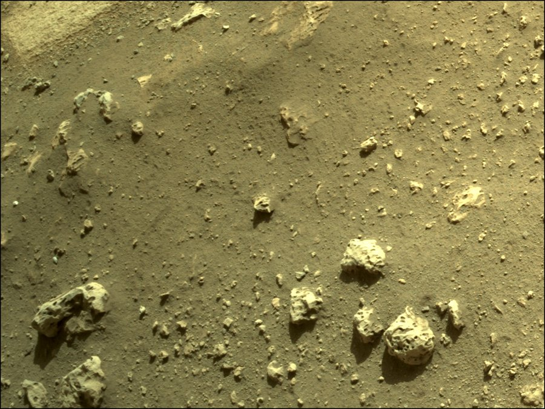
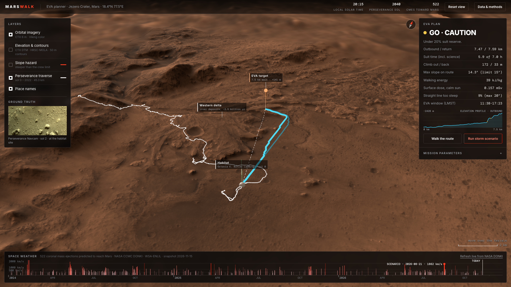
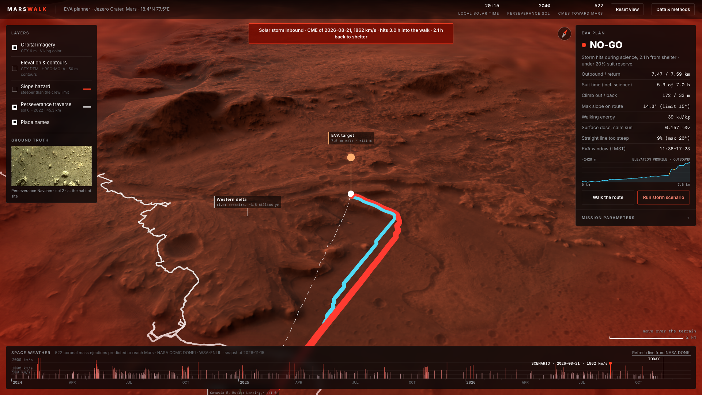

Plan a safe walk on Mars, on real NASA terrain at Jezero Crater.
Jason Fang
NASA SPACE APPS · PHILADELPHIA

The ground at the landing site, by Perseverance's Navcam on sol 2. NASA/JPL-Caltech.

Demo: habitat to the river delta. The straight line (dashed) crosses slopes up to 20°; Marswalk's route (cyan) detours: 7.5 km out, 5.9 h suit time, max slope 14.3°. White line: Perseverance's real 45 km drive, sols 0–2022.
3D surface and slope hazards at 20 m/px, resampled to 60 m for routing.
240 km of surrounding terrain with real Mars curvature.
6 m orthomosaic in the crater, Viking color around it.
522 CMEs forecast to reach Mars, 2024–2026, plus a live refresh.
Perseverance's 45 km drive path and landing-site images.
Local solar time for daylight checks; surface radiation baseline.
Sense slope from the elevation model → Decide with an A* search on Minetti walking energy → Act: go, caution or no-go, with reasons.
NASA's WSA-ENLIL model forecast a CME (Aug 21, 2026, 1,862 km/s) reaching Mars 3 h into this walk. Marswalk finds where the astronaut is at that moment and plans the fastest safe way home.
NO-GO
2.1 h back to shelter. Go another day.

Red route: abort path to the habitat. Bottom strip: every CME forecast to reach Mars since 2024 (bar height = speed); click any one to replay it.
KNOWN LIMITS, STATED IN THE APP
Try it live: pieismath.github.io/marswalk